الدرس الثالث: عناصر البرمجة في سكراتش – اللبنات البرمجية
نستخدم برمجية سكراتش قطعًا برمجية تشبه قطع البناء أو قطع الليغو؛
لتطوير مشروعات تفاعلية مثل تحريك الكائنات، وتشغيل الأصوات،
أو تنفيذ حركات وأحداث متنوعة.
اللبنات البرمجية في برمجية سكراتش (Scratch)
وضح المقصود باللبنات البرمجية في سكراتش.
هي أوامر برمجية جاهزة تُستخدم لتحديد ما يجب أن يفعله البرنامج.
وتشمل أوامر مثل «التحرك»، و«التكرار»، و«التغيير».
وظيفة اللبنات البرمجية في برمجية سكراتش (Scratch)
نوصل اللبنات معًا لإنشاء تسلسل من الخطوات أو التعليمات البرمجية،
تمامًا كما تُجمع قطع الألغاز (الأحجية).
تتيح اللبنات للمستخدم إنشاء برامج بسهولة ومن دون الحاجة إلى
كتابة أكواد معقدة.
تساعد على تنظيم الأفكار وتحويلها إلى خطوات عمليات واضحة.
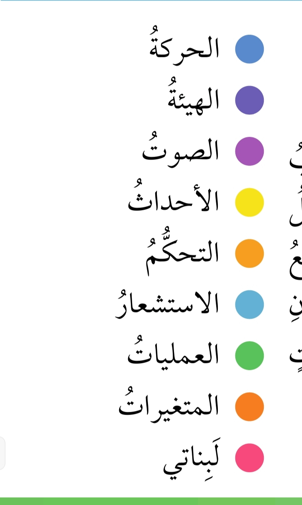
آلية / كيفية استخدام اللبنات البرمجية
نستخدم اللبنات البرمجية بسهولة من خلال تقنية السحب والإفلات.
يبدأ ذلك باختيار اللبنة المطلوبة من تبويب المقاطع البرمجية في لوحة
اللبنات، حيث تمثل كل لبنة أمرًا محددًا مثل الحركة، والتفاعل، أو المظهر.
يتم سحب اللبنة بالفأرة ونقلها إلى مساحة العمل (منطقة البرمجة)،
ثم يمكن توصيلها مع لبنات أخرى لتكوين سلسلة من الأوامر البرمجية.
عند تقريب لبنة من أخرى تلتصق بها تلقائيًا؛ مما يجعل بناء التسلسل
البرمجي سهلًا ومنظمًا. هذه الطريقة البسيطة تسهل إنشاء برامج تفاعلية
بشكل سريع ومرن.
نمتاز هذه الآلية بسهولة بناء الأوامر البرمجية من دون الحاجة إلى
كتابة الأكواد، وإمكانية التعديل السريع على التسلسل البرمجي،
بالإضافة إلى دعم التعلم من خلال التجربة والتفاعل المباشر مع اللبنات.
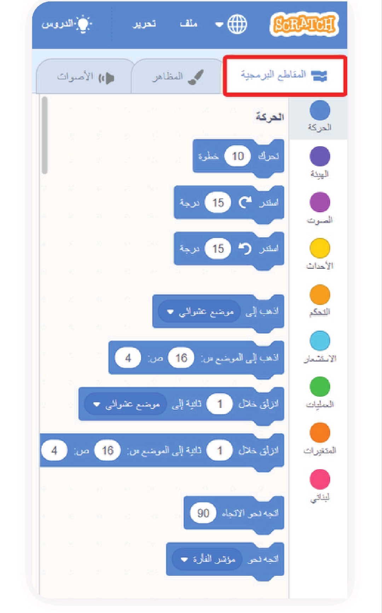
عند استخدام مجموعة من اللبنات البرمجية في سكراتش يمكن للمستخدم
تجميعها وتركيبها بطرق مختلفة لتصميم تعليمات برمجية تفاعلية ومرنة.
طرق استخدام اللبنات في سكراتش وتركيبها موضحًا كل طريقة
طريقة الإلصاق (Sequential Stacking)
يتم ترتيب اللبنات بشكل متتالٍ؛ بحيث تلتصق بعضها مع بعض، وتُنفّذ
الأوامر واحدة تلو الأخرى بناءً على ترتيب اللبنات.
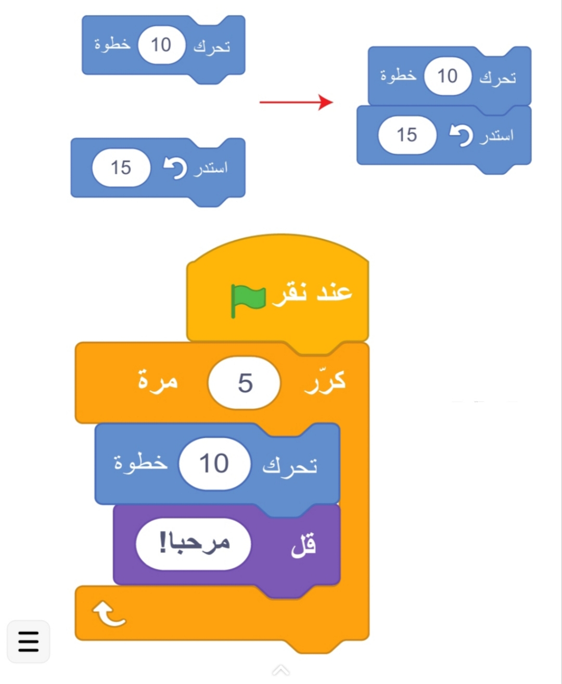
هذا النوع مناسب للأوامر المتسلسلة التي تُنفّذ خطوة بخطوة.
مثال على استخدام اللبنات البرمجية في سكراتش:
لبنة «تحرك 10 خطوات» تليها لبنة «قل مرحبًا!».
التداخل (Nesting)
يتم وضع مجموعة من اللبنات داخل لبنة تحتوي على تكرار أو شرط معين،
وتُنفّذ الأوامر بناءً على التكرار أو الشرط المحدد؛ مما يسهل بناء
حلقات وشروط تجعل المشروع أكثر تفاعلية.
مثال على التداخل:
استخدام لبنة «كرّر» لتكرار مجموعة من الأوامر عددًا معينًا من المرات.
الاحتواء (Embedding)
يتم وضع لبنة صغيرة مثل قيمة متغيرة أو عملية حسابية داخل لبنة أخرى؛
مما يتيح مرونة في التعامل مع القيم المتغيرة والتحكم بالقيم والأوامر.
مثال:
وضع متغير «المجموع» داخل لبنة العملية المنطقية «< 50».
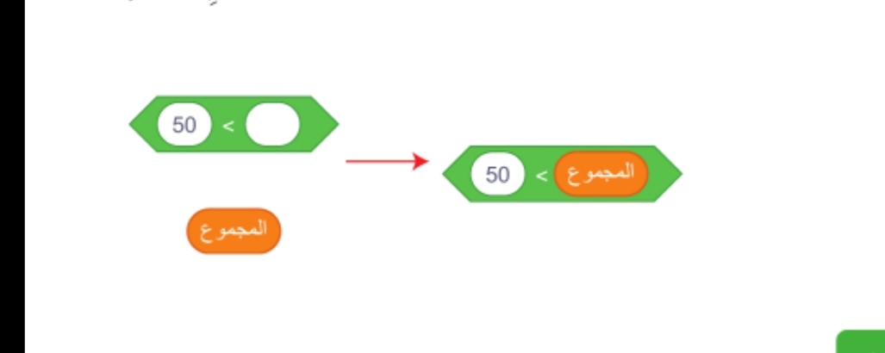
أنواع اللبنات البرمجية في سكراتش
لبنات الحركة (Motion Blocks).
لبنات الهيئة (Looks Blocks).
لبنات الصوت (Sound Blocks).
لبنات الأحداث (Events Blocks).
لبنات التحكم (Control Blocks).
لبنات المتغيرات (Variables Blocks).
لبنات الاستشعار (Sensing Blocks).
لبنات العمليات (Operations Blocks).
أولًا: لبنات الحركة (Motion Blocks)
وضح المقصود بلبنات الحركة (Motion Blocks) واستخدامها في برمجة سكراتش.
نتحكم بهذه اللبنات في حركة الكائنات على الخلفية، وتُستخدم لبنات
الحركة مع الكائنات فقط، وليس مع الخلفية.
تتضمن لبنات الحركة في سكراتش الوظائف الآتية:
تحريك الكائنات:
تحريك الكائن بمقدار معين من الخطوات.
تدوير الكائنات:
تدوير الكائن لليمين أو اليسار بزاوية معينة.
الإشارة إلى اتجاه معين أو نحو كائن آخر:
جعل الكائن يشير نحو كائن آخر أو مؤشر الفأرة.
التحرك إلى نقطة معينة:
باستخدام لبنة «الذهاب إلى» يتحرك الكائن فورًا إلى موقع معين
(نقطة محددة، كائن آخر، أو مؤشر الفأرة).
التحرك تدريجيًا نحو الموقع المحدد:
باستخدام لبنة «الانزلاق».
تغيير الإحداثيات (س، ص):
تعديل الموقع الحالي للكائن على المحورين.
تعيين س / ص إلى:
تعيين موقع الكائن إلى إحداثيات محددة.
الارتداد عند الاصطدام بالحافة:
جعل الكائن يرتد تلقائيًا إذا اصطدم بحافة الخلفية.
تعديل أسلوب التدوير:
تحديد طريقة تدوير الكائن (كامل الدوران، انعكاس، أو من دون تدوير).
تعيين الإحداثيات أو الاتجاه:
ضبط قيمة الإحداثيات (س / ص) أو الاتجاه الذي يسير فيه الكائن
ليظهر على الخلفية في الموقع أو الزاوية المحددة.
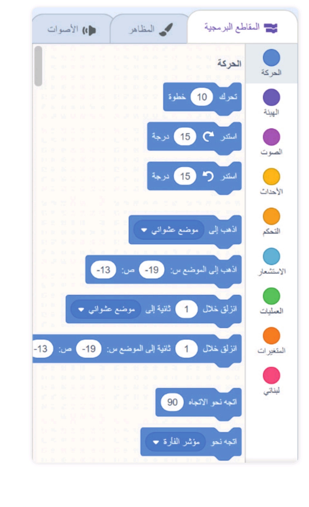
إن اللبنات البرمجية تمنح حرية التحكم بحركة الكائنات وتفاعلها مع
البيئة والمكونات الأخرى في المشروع.
نشاط جماعي
تحريك كائن باستخدام لبنات الحركة فقط
أتعاون مع زملائي في المجموعة لتنفيذ ما يأتي:
أفتح برمجية سكراتش وأبدأ مشروعًا جديدًا.
من مكتبة الكائنات في سكراتش، أضيف كائن الحمامة (Dove) إلى المشروع.
أجرب مع زملائي تحريك الحمامة وفقًا للتعليمات الآتية باستخدام
لبنات الحركة فقط:
أولًا: أجعل الحمامة تطير بشكل أفقي من اليسار إلى اليمين،
ثم تعود إلى موقعها الأصلي.
ثانيًا: أجعل الحمامة تطير للأعلى، وعند اصطدامها بحافة
الشاشة تنزلق لمركز الشاشة.
ثالثًا: أجعل الحمامة تطير بشكل دائري. في كل مرة أجري
حركة، أدون اللبنات التي استخدمتها، وأسجل ملحوظاتي
لأشاركها مع زملائي في المجموعة والمجموعات الأخرى.
أسحب اللبنات جميعها وأضعها تحت لبنة «عند النقر على العلم الأخضر»،
ثم أشغل البرنامج وأراقب الحمامة وهي تؤدي الحركات المطلوبة.
أناقش مع زملائي / زميلاتي اللبنات المستخدمة وأفكارًا لتحسين
الحركة لجعلها أكثر واقعية.
قد يكون من الصعب الاعتماد على لبنات الحركة فقط عند برمجة حركة كائن ما،
لذلك فإن دمج أنواع اللبنات المختلفة يضيف تكاملًا يسهم في تسهيل العمل،
وجعل عملية البرمجة أكثر سلاسة وفعالية.
ثانيًا: لبنات الهيئة (Looks Blocks)
وضح المقصود بلبنات الهيئة (Looks Blocks) واستخدامها في سكراتش.
نستخدم لبنات الهيئة لتغيير مظهر الكائنات والتحكم بالطريقة التي تظهر
بها على الشاشة؛ مما يضيف عنصرًا بصريًا وجماليًا للمشروعات البرمجية،
ويجعلها أكثر تفاعلية وجاذبية.
ويمكن استخدام لبنات المظهر مع الكائنات والخلفية، على الرغم من أن
هناك بعض اللبنات التي تنطبق فقط على الكائنات.
الأنواع الرئيسة من لبنات المظهر:
لبنات عرض النصوص:
تعرض النص في فقاعات حوار أو تفكير باستخدام لبنات «قل» و«فكر».
يمكن عرض النص لفترة محددة أو لفترة غير محدودة. ويمكن دمجها أيضًا
مع لبنات البيانات أو الاستشعار لعرض معلومات متغيرة بدلًا من
النصوص الثابتة، وتُستخدم هذه اللبنات مع الكائنات فقط.
لبنات تغيير المظهر (الكائنات) أو الخلفيات (الخلفية):
تتيح التنقل بين مظهر الكائن أو خلفيات المشروع. يمكن دمجها مع
لبنات التكرار لتبديل المظهر أو الخلفيات بشكل متكرر؛ مما يضيف
حيوية للمشروعات.
لبنات تغيير حجم الكائنات:
تُستخدم لتكبير أو تصغير الكائنات عن طريق تغيير الحجم إلى قيمة
ثابتة أو نسبة مئوية. لا يمكن استخدام هذه اللبنات مع الخلفية.
لبنات تغيير التأثيرات اللونية أو إزالتها:
يمكن تعديل لون الكائنات أو تعيين تأثيرات لونية محددة.
ويمكن استخدام هذه اللبنات مع كل من الكائنات والخلفيات.
لبنات إظهار الكائنات وإخفائها:
تتحكم في ظهور أو اختفاء الكائنات على الشاشة، ولا يمكن استخدامها
مع الخلفيات.
لبنات تحريك الكائنات بين الطبقات:
تتيح إرسال الكائن إلى الأمام أو الخلف بين طبقات المشروع؛ مما
يساعد على إنشاء تأثيرات ثلاثية الأبعاد (تأثير الأشياء التي
تتحرك نحو المشاهد). لا يمكن استخدامها لتحريك الخلفية.
لبنات عرض الخصائص:
مثل اسم الزي، واسم الخلفية، و/أو حجم الكائن على الخلفية.
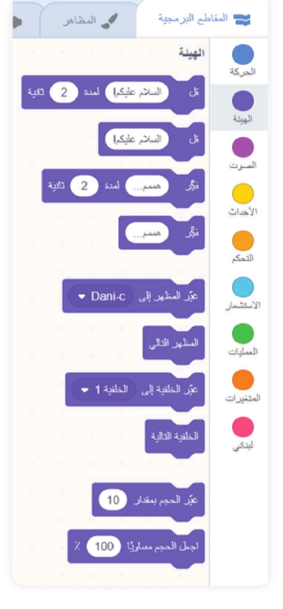
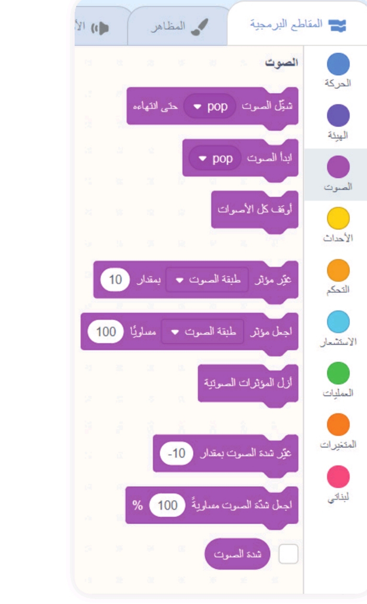
نشاط جماعي
التحكم في مظهر الكائن والخلفية باستخدام لبنات المظهر مع لبنات الحركة
أتعاون مع زملائي في المجموعة لتنفيذ ما يأتي:
أفتح برمجية سكراتش وأبدأ مشروعًا جديدًا.
من مكتبة الكائنات في سكراتش، أضيف كائن «الحمامة» إلى المشروع.
من مكتبة الخلفيات في سكراتش، أضيف خلفية مناسبة للكائن.
أجرب مع زملائي ما يأتي باستخدام لبنات الهيئة ولبنات الحركة
التي تعلمتها:
أولًا: جعل الحمامة تطير للأمام عددًا من الخطوات،
ثم عرض رسالة «مرحبًا»، ومن ثم «من حقي أن أعيش بأمان».
ثانيًا: تغيير مظهر الحمامة في أثناء الحركة باستخدام
لبنات تغيير المظهر لتبدو وكأنها تطير بتحريك الجناحين.
ثالثًا: جعل الحمامة تطير للأمام عددًا من الخطوات مرة
أخرى، وتغيير الخلفية والمظهر مرة أخرى، وإضافة تأثير
لوني متغير على الحمامة باستخدام لبنات تغيير التأثيرات اللونية.
رابعًا: جعل الكائن يختفي عند انتهاء مشهد معين باستخدام
لبنة «إخفاء». ومن ثم يظهر مرة أخرى.
نجرب كل حركة وندون اللبنات التي استخدمناها ونلاحظ تأثيرها في الكائن.
نضع اللبنات جميعها تحت لبنة «عند النقر على العلم الأخضر»
لضمان تسلسل التنفيذ.
نشغل البرنامج ونراقب الكائن وهو يؤدي الأوامر المطلوبة، مع
التركيز على التغييرات التي تضفيها لبنات الهيئة والحركة.
نتشارك ملحوظاتنا وأفكارنا مع المجموعات الأخرى.
نناقش مع زملائنا كيفية تحسين الحركات وجعلها أكثر واقعية وتفاعلًا.
قد يبدو التحكم في حركة المشهد الوارد في النشاط السابق معقدًا بعض الشيء،
ولكن من الواضح أن دمج لبنات الهيئة والحركة مع لبنات التحكم أو الأحداث
يضيف قوة ومرونة أكبر. هذا التكامل يتيح إنشاء تأثيرات ورسوم متحركة
مبدعة تعكس أفكار المستخدم، وتجعل المشروعات أكثر تفاعلًا وإلهامًا.
ثالثًا: لبنات الصوت (Sound Blocks)
تنقسم لبنات الصوت (Sound Blocks) إلى فئات عدة، تشمل:
لبنات تشغيل أو إيقاف الأصوات:
تتيح تشغيل أو إيقاف أصوات من مكتبة سكراتش، أو تلك التي يتم
تحميلها أو تسجيلها.
لبنات تشغيل أصوات الطبول والنغمات:
تُستخدم لتشغيل نغمات أو أصوات طبول محددة لعدد معين من الإيقاعات،
أو إيقاف الأصوات لفترة زمنية محددة.
لبنات تغيير أو تعيين الحجم والإيقاع:
تتيح تعديل مستوى الصوت أو الإيقاع أثناء المشروع، ويمكن عرض
هذه التغييرات على الشاشة.
الفائدة من لبنات الصوت
إن إضافة لبنات الصوت تعزز تجربة المستخدم في المشروعات البرمجية،
سواء في الرسوم المتحركة أو الألعاب.
على سبيل المثال، يمكن للأصوات المضافة أن تتماشى مع الأحداث في اللعبة؛
مما يضفي أجواء أكثر تشويقًا وواقعية، ويزيد من تفاعل المستخدم مع المشروع.
إضاءة
أتذكر أنه يمكنني إضافة الأصوات وتعديلها بطرق مختلفة باستخدام
برمجية Scratch كما تعلمت في الدرس السابق.
رابعًا: لبنات الأحداث (Events Blocks)
وضح المقصود بالحدث البرمجي.
الحدث البرمجي هو أي فعل أو إجراء يؤدي إلى استجابة معينة داخل المشروع.
يمكن أن يكون الحدث ناتجًا عن تفاعل المستخدم مثل الضغط على زر أو
النقر على الكائن، أو تغيرات في البيئة مثل تغيير الخلفية أو استلام رسالة.
الفائدة من الأحداث البرمجية
من دون الأحداث البرمجية، ستظل البرامج ثابتة وغير قادرة على التفاعل
مع البيئة أو المستخدم.
من خلال استخدامها، يمكن للمبرمج إنشاء مشروعات تتجاوب مع التغييرات
والأوامر؛ مما يعزز تجربة المستخدم ويتيح تصميم سيناريوهات متعددة
تلبي احتياجات المشروع بشكل تفاعلي ومبتكر.
لبنات الأحداث الرئيسة
لبنة «عند النقر على العلم الأخضر»:
تعد اللبنة الأكثر استخدامًا، حيث تستخدم لبدء المشروع وتشغيل
النصوص البرمجية.
لبنات التفاعل مع المستخدم:
مثل لبنة «عند ضغط مفتاح»، أو «عند نقر هذا الكائن»، وتُستخدم
لجعل المشروع يتفاعل مع المستخدم بشكل مباشر.
لبنات استجابة الخلفية:
يتم تشغيل النصوص عند حدوث تغييرات في الخلفية مثل لبنة
«عندما تتبدل الخلفية إلى».
لبنات الرسائل الداخلية:
تُستخدم لبث رسائل بين الكائنات. يمكن لكائن بث رسالة معينة عند
حدوث حدث ما، في حين يستجيب كائن آخر لهذه الرسالة بتنفيذ أوامر
معينة مثل لبنة «عندما أتلقى الرسالة». وتساعد في تنظيم التفاعل
بين الكائنات بطريقة غير مرئية للمستخدم.
لبنات استجابة الحساسات:
لبنات تستجيب للتغير في مستوى الصوت، مثل لبنة «عندما الضجيج < 50»،
أو عند استيفاء المؤقت لشرط معين، مثل لبنة «عندما المؤقت < 10».
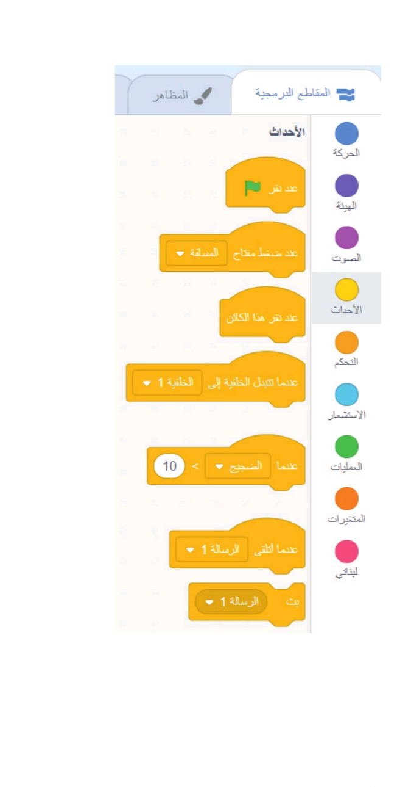
يمكن استخدام جميع لبنات الأحداث مع الخلفية أو الكائنات المتحركة.
خامسًا: لبنات التحكم (Control Blocks)
نستخدم هذه اللبنات لتنظيم النصوص البرمجية، فيمكن إدخال عبارات شرطية،
وحلقات تكرار وتوقفات مؤقتة. تعد لبنات التحكم أدوات قوية لإضافة
التفاعلية إلى المشروعات.
متى تصبح لبنات التحكم أكثر فاعلية؟
وتصبح هذه اللبنات أكثر فعالية عند دمجها مع المتغيرات و/أو العمليات.
تشمل لبنات التحكم:
لبنات التوقف المؤقت:
إما الانتظار لفترة زمنية محددة قبل تنفيذ الأمر التالي، أو
الانتظار حتى يتحقق شرط معين أو يتفاعل المستخدم.
لبنات شرطية:
تحيط بمجموعة من الأوامر وتنفذها فقط إذا تحقق شرط معين.
حلقات التكرار:
تكرار مجموعة من الأوامر لعدد معين من المرات أو إلى الأبد.
ويمكن أيضًا أن تكون الحلقات مشروطة بحيث تتوقف عند تحقق شرط معين.
لبنات إيقاف جميع الحلقات:
تُستخدم لإيقاف عمليات التكرار الجارية كافة في المشروع.
لبنات إنشاء النسخ واستخدامها:
تتيح إنشاء نسخ متعددة من الكائن نفسه واستخدامها داخل المشروع.
ومن الجدير التذكير به أن هذه لبنات التحكم الوحيدة التي لا تعمل
مع الخلفيات.
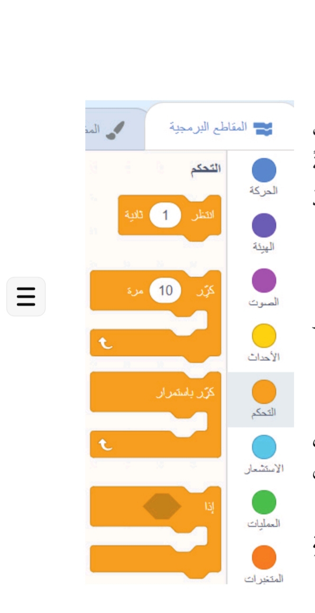
سادسًا: لبنات المتغيرات (Variables Blocks)
وضح المقصود بالمتغير.
هو أداة أساسية في البرمجة، تُستخدم لتخزين قيمة يمكن تعديلها في أثناء
تشغيل البرنامج. يشبه المتغير صندوقًا يمكن وضع معلومات فيه، مثل رقم
أو نص لاستخدامها لاحقًا في أجزاء مختلفة من المشروع.
أهمية المتغير
يساعد المتغير على تتبع تغييرات القيم في أثناء تشغيل البرنامج؛ مما
يجعل المشروع أكثر استجابة لتفاعلات المستخدم ويسهل إدارة المعلومات،
ويقلل من التعقيد عند كتابة الكود.
وضح المقصود بالمتغيرات وكيفية إنشائها في برمجية سكراتش.
هي وسيلة لتخزين بيانات مثل الأرقام أو النصوص واستخدامها في العمليات
البرمجية. يمكن إنشاء متغير بسهولة باستخدام لبنة «إنشاء متغير»،
مع تحديد اسم ووظيفة له.
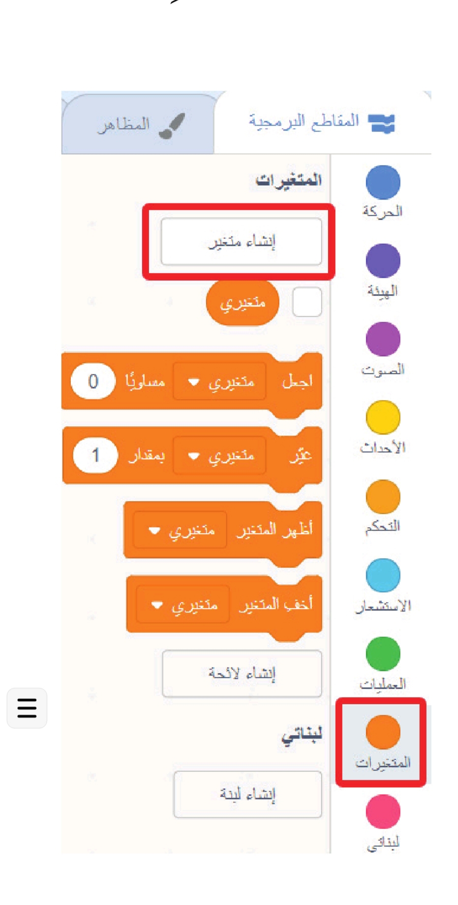
أمثلة على استخدام المتغيرات في سكراتش
حساب النقاط:
تُستخدم لتسجيل عدد النقاط المكتسبة في أثناء اللعبة، حيث تتم
زيادة النقاط عند كل حركة ناجحة.
توقيت المهام:
تساعد في قياس الوقت المنقضي في أثناء اللعبة، أو تحديد مؤقت زمني محدد.
إدارة الحالات:
تُستخدم لتخزين حالات معينة، مثل «هل الكائن يتحرك؟» أو
«هل تم الفوز باللعبة؟».
أبحث
أبحث في المواقع الإلكترونية الموثوقة في شبكة الإنترنت عن الأنواع
المختلفة من البيانات التي من الممكن تخزينها داخل المتغير.
وأشاركها مع زملائي عبر مجموعة الصف، أو عبر اللوح الرقمي التفاعلي
الخاص بالصف.
نصية
رقمية
عشرية
منطقية
سابعًا: لبنات الاستشعار (Sensing Blocks)
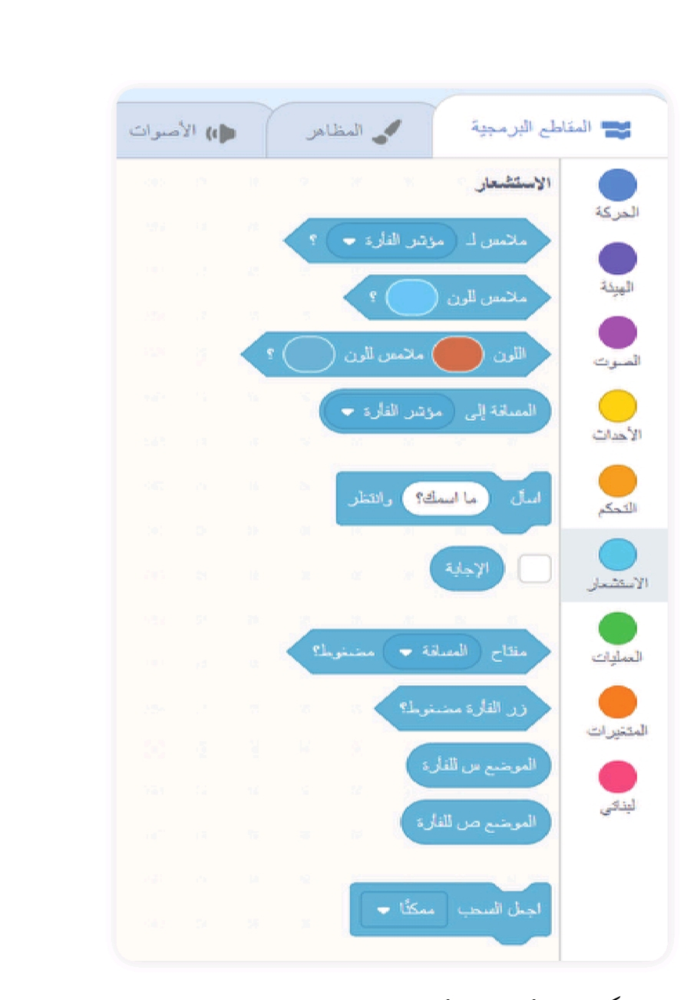
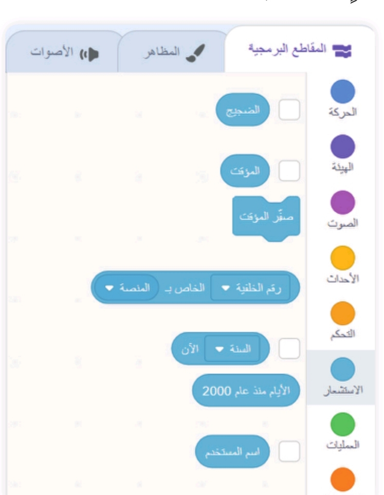
توفر لبنات الاستشعار أدوات قوية لاستكشاف التفاعلات داخل المشروع
ومعرفة ما يحدث في نقطة معينة، وجعل الكائنات والخلفيات تستجيب لها.
تشمل لبنات الاستشعار ما يأتي:
لبنات الكشف عن التلامس والمسافة:
وتُستخدم لتحديد ما إذا كان كائن يلامس كائنًا آخر أو لونًا معينًا،
والكشف عن المسافة بين الكائنات أو بين كائن ومؤشر الفأرة.
ويمكن استخدام هذه اللبنات مع الكائنات فقط، وليس مع الخلفية.
لبنات طرح الأسئلة:
تُستخدم لعرض سؤال على المستخدم باستخدام لبنة «اسأل وانتظر».
ويمكن تخزين الإجابة في متغير «الإجابة» واستخدامها في عمليات شرطية.
لبنات الكشف عن ضغط المفاتيح أو الفأرة:
تُستخدم للتحقق مما إذا كان مفتاح معين على لوحة المفاتيح مضغوطًا،
وكذلك لمعرفة ما إذا كان مؤشر الفأرة فوق كائن معين أو إذا تم النقر عليه.
لبنات الفيديو:
للكشف عن حركة أو اتجاه الكائنات وتسجيلها.
لبنات قياس الوقت:
تُستخدم لقياس مدة تشغيل المشروع؛ مما يتيح تتبع الزمن أو ضبط
التفاعلات بناءً على مدة محددة.
مثال على لبنات الاستشعار
ويمكن استخدام لبنات الاستشعار في الألعاب لجعل اللاعب يخسر عندما
يلمس عنصر ما عنصرًا آخر، أو للكشف عما إذا كانت الشخصية تتحرك بسرعة
كافية لاختراق شخصية أخرى على سبيل المثال.
ثامنًا: لبنات العمليات (Operations Blocks)
وضح المقصود بلبنات العمليات (Operations Blocks).
تعد لبنات العمليات أدوات أساسية لتنفيذ العمليات الحسابية والمنطقية
داخل المشروعات.
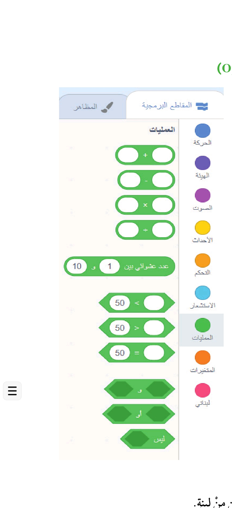
الفائدة من لبنات العمليات
إنها تتيح للمبرمج إجراء المقارنات والحسابات.
تساعد في التحكم بالسلوكات استنادًا إلى قيم متغيرة أو ثابتة.
يمكن استخدامها بالتزامن مع لبنات المتغيرات أو لبنات الاستشعار وغيرها.
ويمكن أيضًا استخدام جميع لبنات العمليات مع الكائنات والخلفية.
تشمل لبنات العمليات ما يأتي:
لبنات العمليات الحسابية (جمع، وطرح، وضرب، وقسمة):
لإجراء العمليات الرياضية على قيم محددة. وتُستخدم مع متغيرات
أو مع قيم يتم جمعها من لبنات الاستشعار.
لبنات اختيار القيم العشوائية:
تُستخدم لاختيار رقم عشوائي بين رقمين محددين.
لبنات المقارنات:
لتحديد ما إذا كانت قيمة معينة أقل، أو أكبر، أو مساوية لقيمة أخرى.
وتُستخدم مع لبنات التحكم مثل «إذا».
لبنات المعاملات المنطقية (and)، أو (or)، ليس (not):
وتُستخدم لدمج الشروط أو التحقق من استيفاء أكثر من شرط واحد.
وتُستخدم داخل اللبنات الشرطية مثل «إذا» و«كرر».
لبنات دمج لبنات أخرى:
لدمج لبنات أخرى معًا أو العمل مع جزء معين من لبنة.
لبنات التعامل مع القيم الرقمية:
لتقريب القيم إلى أقرب عدد صحيح، أو تحديد ما إذا كانت القسمة
تحتوي على باقي.
ميزة «لبناتي» والروتين
وضح المقصود بميزة «لبناتي» واذكر الفائدة منها.
وضح المقصود بالروتين.
تتيح برمجية سكراتش استخدام ميزة «لبناتي» لإنشاء لبنات برمجية خاصة
بالمستخدم. فإذا كنت أستخدم مجموعة معينة من اللبنات بشكل متكرر في
مشروعي، سواء مع شخصيات متعددة أو نصوص برمجية مختلفة، يمكن إنشاء
لبنة واحدة تحتوي على هذه المجموعة (الروتين)، ثم استخدامها في أي
مكان أحتاج فيه إلى تكرار الإجراء نفسه. تعمل هذه الميزة مثل الدوال
أو الفئات في لغات البرمجة الأخرى.
إضاءة
يمكن توسيع إمكانات سكراتش باستخدام ميزة «إدراج إضافة».
تتيح هذه الميزة إضافة ملحقات متقدمة بوظائف جديدة إلى مشروعاتي.
على سبيل المثال:
ربط الأجهزة الخارجية:
يمكنك توصيل أجهزة مثل لوحة (PicoBoard) لإضافة مدخلات ملموسة
(مثل قياس الضوء أو الأصوات) إلى مشروعي.
التحكم في الروبوتات:
يمكنك استخدام ملحقات مثل LEGO WEDO، أو Micro:bit للتحكم
في الروبوتات أو الأجهزة التي أقوم ببنائها؛ مما يجعل مشروعاتي
أكثر تفاعلية وارتباطًا بالعالم الحقيقي.